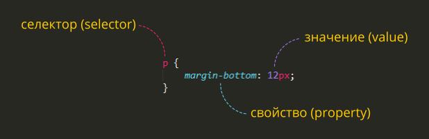

Cascading Style Sheets - стили оформления HTML-документов. Отвечают за внешний вид страницы и правила отображения содержимого.
<style>
.important {
color: green;
font-style: italic;
}
</style>
<p><span style="color: green; font-style: italic">Пример</span>кода.</p>
<head><link rel="stylesheet" href="../../style.css"></head>Стили применяются через указание селекторов.
* – любые элементы
div – элементы с таким тегом
#id – элемент с данным id
.class – элементы с таким классом
[name="value"] – элементы с таким значением соответствующего атрибута
:visited – псевдо-классы
При "конфликтах" стили применяются сверху-вниз.
У разных селекторов разный приоритет. В порядке возрастания:
<элемент>
,
.class,
#id.
<p class="green">Это параграф зеленого цвета</p>
p.green {
color: green;
}
Селектор p.green означает «все элементы типа p с классом green»
Селектор .green означает «все элементы любого типа с классом green»
Селектор ul li означает «элементы li внутри предка ul»
Селектор .green li означает «элементы li внутри предка с классомgreen»
Для уникальных элементов вместо class используют id: <div
id="logo"></div> и вместо точки используют решетку:
div#logo {
padding: 50 px;
}
div p – элементы p, являющиеся потомками div
div > p – только непосредственные потомки
div ~ p – правые соседи: все p на том же уровне вложенности, которые идут после div
div + p – первый правый сосед: p на том же уровне вложенности, который идёт сразу после div
display (display: block - элемент с новой строки во всю ширину; display:
inline - начинается в любом месте, занмает места на весь свой обьем).
div - основной блочный элемент.
span - основной строчный элемент.
В браузерах по-умолчанию используются собственные стили элементов, поэтому вид сайтов может отличаться.
Для переназначения стилей существуют CSS-ресеты.
html, body {
margin: 0;
padding: 0;
}
Нормализация используется для улучшения кроссбраузерности, она считается лучшей практикой, чем ресеты.
normalize.css